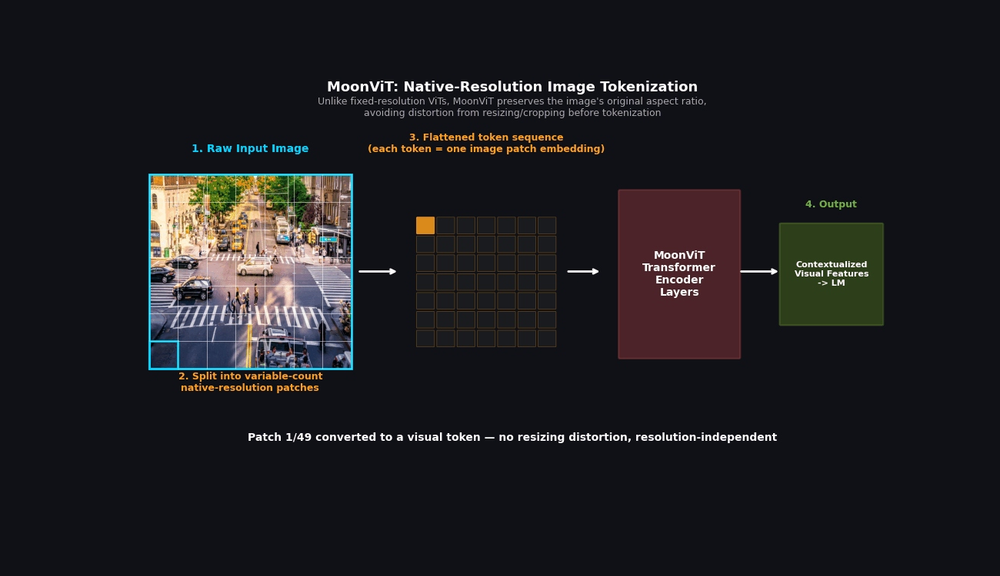

LocateAnything-3B: A Technical Overview
How a 3-billion-parameter vision-language model breaks the autoregressive bottleneck in visual grounding — predicting entire bounding boxes in one parallel step instead of four sequential ones.
assets/gifs/demo-grounding.gif and swap the <div id="gif-hero-demo"> block for an <img> tag — see comment in index.html.The efficiency problem in visual grounding
Visual grounding is the function of locating a specific object or region within a video or image based on what someone described in natural language, and produces a bounding box that pinpoints specifically where that item or object may be. Unlike traditional object detection, which primarily relies on a fixed set of class labels like "Person," "Car," or "Dog," visual grounding understands free-form, open-vocabulary queries like "the person driving the black car near the left side of the road."[1] This flexibility makes grounding models far more useful for real-world applications where the objects of interest cannot be called out in advance — such as an AI agent that needs to click a specific button on a screen, or an agent that needs to locate various objects based on a description from a user or system.
Despite how useful visual grounding systems are, existing vision-language models (VLMs) still face a fundamental efficiency problem. They generate their bounding box coordinates one number at a time, requiring four sequential decoding steps to produce a single box.[2] This token-by-token generation process creates a significant latency bottleneck, particularly in dense scenes with many objects, or in real-time applications like robotics and video analysis where speed is critical.
For this project I decided to explore LocateAnything-3B (huggingface.co/nvidia/LocateAnything-3B), a vision-language grounding model released by NVIDIA in May 2026.[3] This model was recently released and is currently one of the top trending models on Hugging Face. LocateAnything is a generalist vision-language model — it is not trained to do just one specific thing, like only identifying cats or only scanning license plates, but instead handles a massive variety of everyday objects and concepts. It is built for one core task: point it at an image or video, describe what you are looking for in natural language, and it instantly pinpoints the exact object or region with a bounding box. This model also supports a variety of capabilities in one package, including open-vocabulary object detection, app navigation by AI agents, document analysis, and can assist robots with their perception of the world around them.[3][4]
The gap LocateAnything fills is the tradeoff between decoding speed and localization quality. Rather than accepting slower, sequential decoding as the price of accurate grounding, the model introduces a new decoding mechanism — Parallel Box Decoding (PBD) — that predicts an entire bounding box simultaneously, breaking the autoregressive bottleneck while actually improving accuracy on most benchmarks.[5][6]

Four components, one pipeline
LocateAnything is built on a standard vision-language model backbone, extended with a specialized output mechanism for efficient box generation.[3]
Vision Encoder — MoonViT-SO-400M
The stack starts with MoonViT, a visual transformer encoder adapted from Kimi-VL, which processes the inputted image at its native resolution (up to 2.5K) rather than forcing it into a fixed low-resolution grid. This preserves fine-grained spatial detail that is critical for precise localization, especially for small or densely packed objects.
MLP Projector
The visual features produced by MoonViT exist in a different space than the language model's token embeddings. A multi-layer perceptron (MLP) projector bridges this gap, transforming visual tokens into a format the language decoder can process alongside text.
Language Decoder — Qwen2.5-3B-Instruct
The projected visual tokens are concatenated with the tokenized natural language query (up to 24K tokens) and fed into Qwen2.5-3B-Instruct, a transformer decoder that handles both language understanding and, in the standard case, next-token generation.
Parallel Box Decoding (PBD) Output Head
Instead of relying solely on the decoder's standard token-by-token output layer, LocateAnything adds a specialized output that allows the model to emit an entire bounding box as one atomic unit rather than a sequence of individually predicted tokens. This is the component that most distinguishes LocateAnything from prior generalist grounding VLMs.
Overall, the model totals 3 billion parameters, making it small enough to be practical for real-time and on-device applications while still matching or exceeding the localization quality of larger specialist models.[3][5]

assets/gifs/architecture-flow.gif and swap this block for an <img> the same way as the hero slot above.How Parallel Box Decoding works
In standard vision-language models, bounding box coordinates (x1, y1, x2, y2) are generated one number at a time using next-token prediction (NTP) — the same mechanism used to generate ordinary text.[2] Each coordinate is quantized into a unique token, and the model must complete four sequential decoding steps to fully specify a single box. This is similar to writing a word one letter at a time: it may work, but it is slow, and it discards the geometric relationship between the four numbers, since the model treats them as an arbitrary sequence of tokens rather than as part of a single coherent shape.
LocateAnything reframes each bounding box as an atomic six-token block rather than four independently generated numbers. The Main Idea — Parallel Box Decoding[5]
Each block consists of a <box> start token, the four quantized coordinate tokens (each normalized to a range of 0–1000), and a </box> end token.[5] Instead of predicting these six tokens sequentially, the model predicts the entire block simultaneously in a single parallel decoding step — this is Parallel Box Decoding (PBD).

A different attention mechanism
Predicting six tokens at once requires the model to attend to all of them jointly, rather than only to tokens generated before it. LocateAnything addresses this with a specialized diverse attention mask that combines three attention patterns:[5]
Standard causal attention
Within the ordinary text-generation stream — left-to-right, as in normal language modeling.
Causal attention across blocks
So that later boxes can still condition on earlier ones in the sequence.
Bidirectional attention within a block
All four coordinates and the two boundary tokens see one another, preserving the box's geometric coherence.

Dual-formulation training
To ensure the model retains strong language understanding while gaining this new parallel capability, training uses a dual-objective loss combining a standard token-by-token loss (NTP) and a new block-level parallel loss (MTP), optimized jointly on the same training sequence composed of visual tokens, the query, the NTP target, and the block-level target.[5]
The payoff
Boxes per second (BPS) on an H100 GPU. PBD reaches over 10× the throughput of Qwen3-VL and 2.5× that of Rex-Omni.[5][6]
Because PBD collapses four sequential decoding steps into one parallel step, LocateAnything achieves up to 2.5× higher throughput than prior approaches. Critically, this speedup does not come at the cost of accuracy: because the bidirectional attention within each block preserves the geometric relationship between the four coordinates, PBD actually improves localization quality on most benchmarks compared to standard autoregressive decoding.[5][6]
assets/gifs/pbd-vs-ntp-speed.gif.